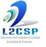

|
|
|
Ahmed MAIDI
Professeur

|
|
|
 
Département Automatique
Faculté de Génie Electrique et d'Informatique
Université Mouloud MAMMERI (UMMTO)
15 000 Tizi-Ouzou, Algérie (Algeria)
|
Carrière universitaire
- 2016 : Professeur.
- 2010 : Maître de Conférences, Classe A.
- 2008 : Maître de Conférences, Classe B.
- 2004 : Maître-assistant, Chargé de Cours.
- 2002 : Maître-assistant.
- 2001 : Maître-assistant stagiaire.
- 1999 : Enseignant vacataire, Université M'Hamed BOUGARA de Boumerdès (UMBB), Algérie.
Retour
Enseignements
Modules assurés
- Commande avancée
- Spécialité : Master 2 Académique.
- Options : Automatique et Systèmes (AS); Automatique et Informatique Industrielle (AII).
- Commande optimale
- Spécialité : Master 1 Académique.
- Options : Automatique et Systèmes (AS).
- Programmation en langage évolué
- Spécialité : Master 1 Professionnalisant.
- Options : Contrôle, Véhicule et Propulsion Electrique (CVPE).
Encadrement
Thèmes des sujets
- Modélisation et simulation des systèmes dynamiques.
- Application des techniques d'optimisation en Automatique.
- Commande optimale et commande non linéaire des systèmes dynamiques.
- Analyse et synthèse des systèmes dynamiques incertains.
Pré-requis
- Algèbre et analyse.
- Maîtrise des notions de base d'optimisation et d'automatique.
- Méthodes numériques.
- Maîtrise d'un langage de programmation.
- Maîtrise d'un logiciel de traitement de texte.
Retour
Recherche
Structure de rattachement

|
|
|
Laboratoire de Conception et de Conduite des Systèmes de Production (L2CSP)
Faculté de Génie Electrique et d'Informatique (FGEI), Université Mouloud MAMMERI (UMMTO), Tizi-Ouzou, Algérie
|
|
|
Thèmes de recherche
Les travaux de recherche concernent l'automatique des systèmes
de dimension infinie. On s'intéresse particulièrement à :
- l’étude des systèmes décrits par des équations aux dérivées partielles et intégro-différentielles.
- simulation des systèmes de dimension infinie.
- analyse des propriétés fondamentales des systèmes de dimension infinie.
- commande des systèmes de dimension infinie basée sur l’approche de post-approximation.
- estimation d’état des systèmes de dimension infinie.
- optimisation des systèmes de commande des systèmes de dimension infinie.
Domaines d'applications
- Génie des procédés.
- Biologie.
- Mécanique.
- Agriculture.
Retour
Sélection de publications et de communications
Livres
- A. Maidi.
Programmation Graphique - Une introduction avec MyOpenLab. Éditions Universitaires Européennes, 2022.
Chapitres de livres
- A. Maidi and J. P. Corriou.
PDE control of heat exchangers by input-output linearization approach. In :
Libor Pekař (Editor), Advanced Analytic and
Control Techniques for Thermal Systems with Heat Exchangers. Elsevier, July 2020, Pages 367-386.
Journaux
- A. Maidi and J. P. Corriou. Globally linearising control of linear time-fractional diffusion-advection-reaction systems.
International Journal of Automation and Control, Vol. 17 , No. 1 , 2023, Pages 73–90.
- A. Maidi and J. P. Corriou. Distributed control of linear partial integro-differential equations based on the input-output linearisation approach.
International Journal of Modelling, Identification and Control, Vol. 40 , No. 2 , 2022, Pages 127–136.
- A. Maidi and J. P. Corriou. Neumann boundary geometric control of a fractional diffusion process.
International Journal of Modelling, Identification and Control, Vol. 34 , No. 1 , 2020, Pages 51–58.
- A. Maidi and J. P. Corriou. Distributed feedback control of a fractional diffusion process.
International Journal of Dynamics and Control, Vol. 7 , No. 3 , September 2019, Pages 1091–1100.
- A. Maidi and J. P. Corriou. Boundary Geometric Control of a Nonlinear Diffusion System with Time-Dependent Spatial Domain.
Asian Journal of Control, Vol. 18 , No. 4 , July 2016, Pages 1259–1268.
- A. Maidi and J. P. Corriou. Controllability of Nonlinear Diffusion System.
The Canadian Journal of Chemical Engineering, Vol. 93 , No. 2 , February 2015, Pages 427-431.
- A. Maidi and J. P. Corriou. Boundary Geometric Control of a Linear Stefan Problem.
Journal of Process Control, Vol. 24 , No. 6 , June 2014, Pages 939-946.
- A. Maidi and J. P. Corriou. Distributed Control of Nonlinear Diffusion Systems by Input-Output Linearization.
International Journal of Robust and Nonlinear Control, Vol. 24 , No. 3 , February 2014, Pages 386-405.
- A. Maidi and J. P. Corriou. Open-Loop Optimal Controller Design Using Variational Iteration Method.
Applied Mathematics and Comutation,
Vol. 219 , No. 16 , April 2013, Pages 8632-8645.
- A. Maidi and J. P. Corriou. Distributed Feedback Design for Systems Governed by the Wave Equation.
International Journal of Control, Vol. 84, No. 8, August 2011, Pages 1417-1429.
Conférences
- A. Maidi and J. P. Corriou. Commandabilité d'un Système de Diffusion Non Linéaire.
10ème Congrès de la Société Française de Génie des Procédés, 08-10 Octobre 2013, Lyon, France. In Récents Progrès en Génie des Procédés,
Vol. 104, Éditions Société Française de Génie des Procédés (SFGP), 2013.
- A. Maidi and J. P. Corriou. Boundary Geometric Control of Nonlinear Diffusion Systems.
1st IFAC Workshop on Control of Systems Modeled by Partial Differential Equations (CPDE 2013), September 25-27, 2013, Paris, France.
- A. Maidi and J. P. Corriou. Optimal Control of Nonlinear Chemical Processes Using the Variational Iteration Method.
8th IFAC International Symposium on Advanced Control of Chemical Processes (ADCHEM 2012), July 10-13, 2012, Singapore.
- A. Maidi and J. P. Corriou. Boundary Control of Nonlinear Distributed Parameter Systems by Input-Output Linearization.
18th IFAC World Congress, August 28-September 02, 2011, Milan, Italy.
Collaboration internationale
- Professeur Jean-Pierre CORRIOU, Groupe Optimisation Dynamique et Commande Avancée des procédés (ODCA, Ex TASC),
Laboratoire de Réactions et Génie des Procédés (LRGP, Ex LSGC), École Nationale Supérieure des Industries Chimiques (ENSIC). Université de Lorraine, Nancy, France.
- Docteur (HDR) Karim BELHARET,
Junia HEI-Campus Châteauroux, Châteauroux, France.
Retour
Dernière modification : 10 octobre 2023.